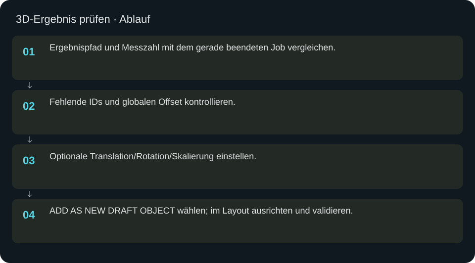
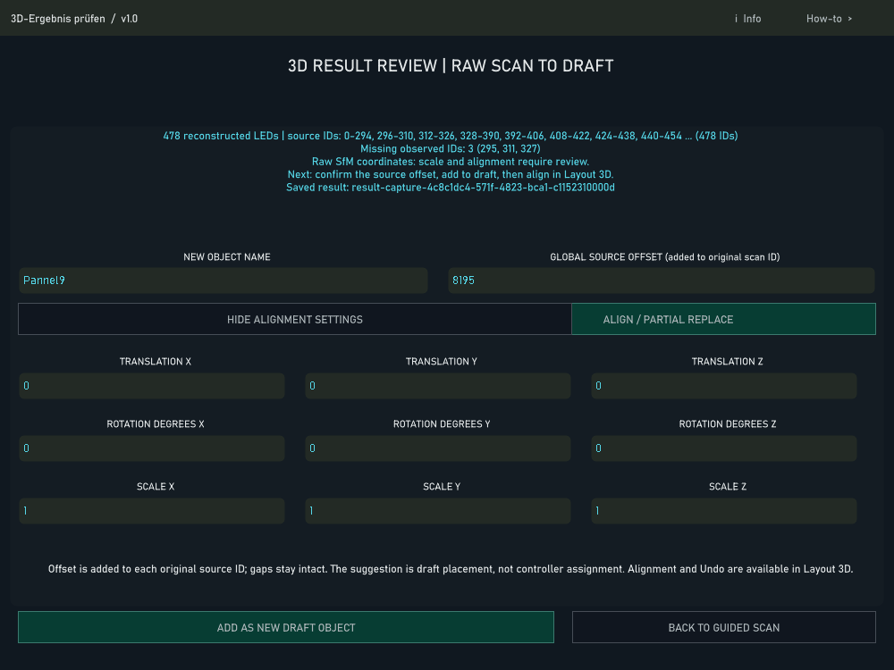

3D-Ergebnis prüfen
Messpunkte, IDs und Ausrichtung prüfen und das Ergebnis als neuen Layoutentwurf übernehmen.
In welcher Reihenfolge?
- Ergebnispfad und Messzahl mit dem gerade beendeten Job vergleichen.
- Fehlende IDs und globalen Offset kontrollieren.
- Optionale Translation/Rotation/Skalierung einstellen.
- ADD AS NEW DRAFT OBJECT wählen; im Layout ausrichten und validieren.


Schritt für Schritt
Keine stillen Ergänzungen
Der Offset wird zu originalen IDs addiert. Fehlende IDs bleiben fehlend; das Werkzeug erfindet keine Koordinaten. Die Übernahme erzeugt ein neues Entwurfsobjekt, kein automatisches Überschreiben eines bestehenden Panels.
Beispiel
Für Panel 8 Ergebnis mit 296 gemessenen Punkten und lokalem Bereich 0–298 prüfen. Erst dann im Layout den Ersatz vorbereiten. Ein im Dialog gespeicherter alter Scan mit anderer Punktzahl muss zuerst durch das richtige Ergebnis ersetzt werden.
Eingaben & Beispiele
| Feld | Bedeutung | Beispiel |
|---|---|---|
name | Name für das neue Entwurfsobjekt. | Panel 8 neuer Scan |
offset | Wird jeder originalen Scan-ID hinzugefügt; gegen freie globale Quellplätze prüfen. | 0 |
tx | Translation: X Höhe, Y rechts, Z Tiefe. | 0 |
ty | Translation: X Höhe, Y rechts, Z Tiefe. | 0 |
tz | Translation: X Höhe, Y rechts, Z Tiefe. | 0 |
rx | Rotation in Grad um die genannte Achse. | 90 |
ry | Rotation in Grad um die genannte Achse. | 90 |
rz | Rotation in Grad um die genannte Achse. | 90 |
sx | Skalierung; 1 erhält die Größe. | 1 |
sy | Skalierung; 1 erhält die Größe. | 1 |
sz | Skalierung; 1 erhält die Größe. | 1 |
Numerische Eingaben verwenden einen Punkt als Dezimaltrennzeichen. IPs, Pfade, Quellstarts und Universen zuerst mit der tatsächlichen Installation vergleichen.
Woran erkenne ich Erfolg?
Die erwartete Ansicht öffnet, Status und Vorschau entsprechen der gewählten Aktion, und es erscheint kein Fehler. Änderungen beim nächsten Laden beziehungsweise im Live-Status erneut lesen. Ein erfolgreicher Bildschirmtest beweist weder physische LED-Ausgabe noch korrekte Kameramessung.
Quellennachweis
Dateipfade im Projekt-Repository; die Onlinehilfe gibt keinen allgemeinen Dateisystemzugriff frei.
pixelblaze_mapper/build_scan_session_ui.pypixelblaze_mapper/scan_result_review.py
Dialog: /project1/guided_scan/review_panel